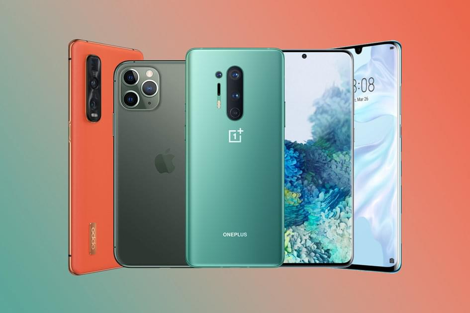
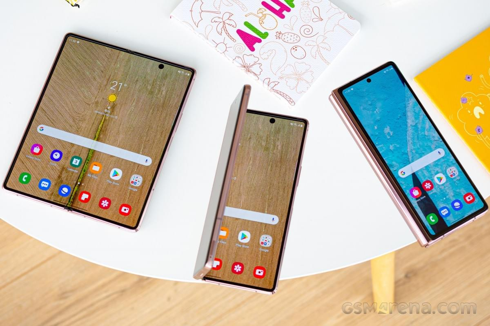
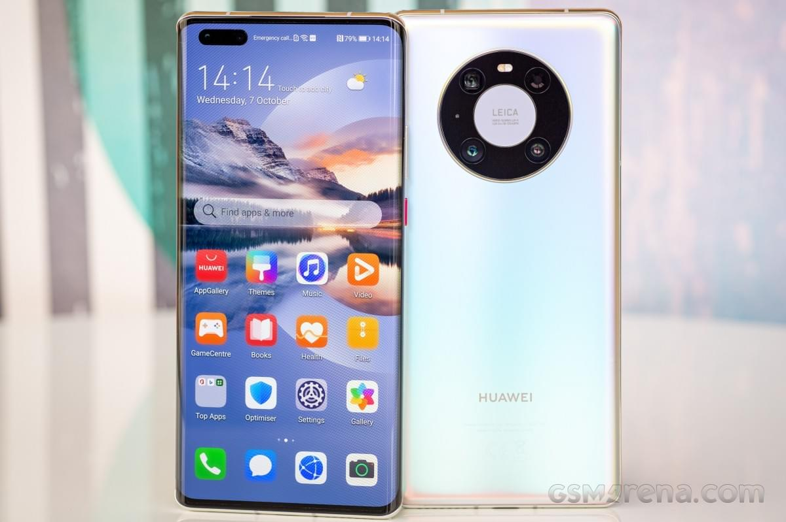
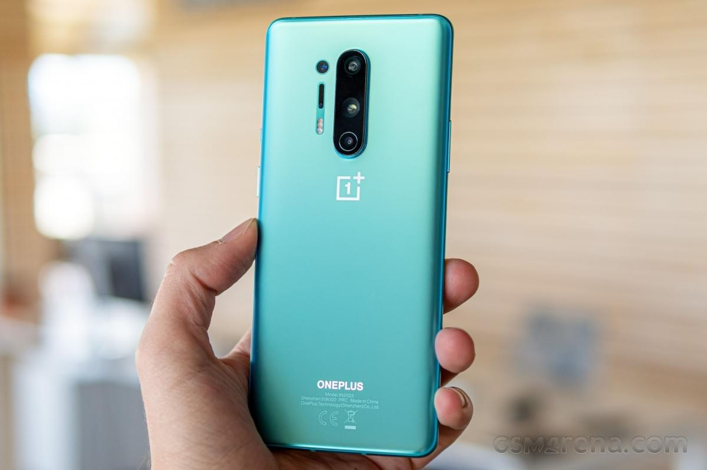
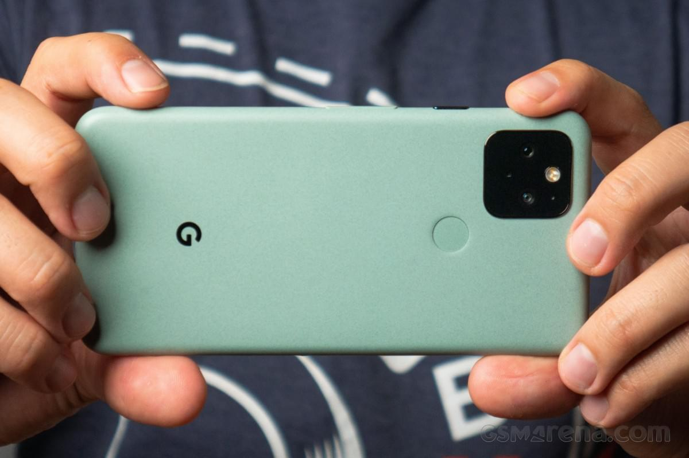
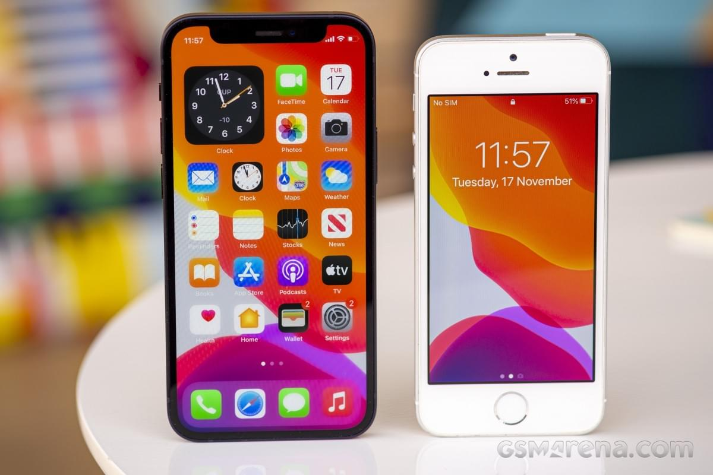
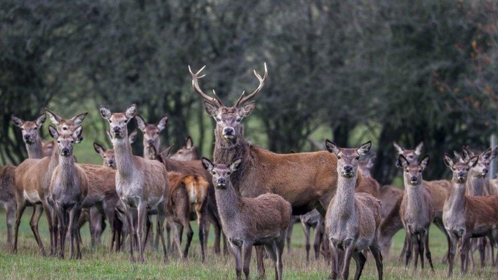

My name is Maksym, i'm
21
years old. I have many different hobbies. From sports I am fond of ping-pong, volleyball,
football. My main hobby is MMA(Mixed martial arts). I have been to various competitions, and won
prizes place. In my
free time i like walking in night city and
sleeping. Sometimes i travel. I have already visited such countries as Bulgaria, Romania, Georgia,
Poland, Egypt. And in the future, I am planning to visit even more other countries. From non-active
hobbies, I keen on programming and playing video games. When i do something, i always have music
playing).
READ ME
Sometimes i post something interesting
24
December
Sepa subject of 'significant cyber attack'
TECHNOLOGY
Sepa says the attack was launched just after midnight and is affecting its communications
systems.
The environmental regulator is working with police and security experts to respond to what
appears to be "complex and sophisticated criminality".
Its contact centre is affected and it says people who need to get in touch should use Twitter
or
Facebook.
The agency says its main services continue to operate but its communication into and across
the
organisation are "significantly impacted".
Executive director David Pirie said the attack was launched at 00:01 on Christmas Eve.
"We immediately enacted our robust business continuity arrangements, with our core
regulatory,
monitoring, flood forecasting and warning services adapting and continuing to operate," he
said.
"Our emergency management team is working with Scottish government, Police Scotland and the
National Cyber Security Centre to respond to what appears to be complex and sophisticated
criminality.
"Whilst we continue to liaise closely with resilience partners, we're asking for those who
wish
to contact us right now to do so through our social media channels on Facebook
and Twitter.
"
25
December

My top 5 phones of 2020 - Maksym
TECHNOLOGY
Before I lay down the list of what I think are the best phones to come out in 2020, let's get
a few things out there. This is a subjective list and these are by no means the only devices
I've liked throughout 2020. But the boss said 5, so there you go.
I also don't want to discredit the multitude of innovative phones to
come out in 2020. But
my
choices aren't only based on innovation.
Samsung Galaxy Z Fold2
I'm sure this will be a popular pick among my colleagues, but it's the Galaxy Z Fold2. You
really need to touch the Galaxy Z Fold2 to understand just how transformative it is. It's
unlike anything else - holding and using this device feels years too early. Yet unlike the
first-gen Galaxy Fold, the Galaxy Z Fold2 feels ready for daily use.
It's usable folded, thanks to a bigger outer screen, but when unfolded it becomes a lovely
gateway to the mobile world. There's nothing else like it - a compact tablet that folds
into
an easy to carry phone.
And thanks to some aging and depreciation, the Galaxy Z Fold2 costs
about as much as a
boring
old iPhone 12 Pro Max. If it had better cameras, I'd have bought the Fold instead of the
boring iPhone.

Huawei Mate 40 Pro
Because I take 90% of my personal images with my phone, I'm always interested in the best
phone for photography. For years now I've jumped from a Google Pixel to an Apple iPhone,
but this year the Huawei Mate 40 Pro is the clear photography king.
You could argue that the Huawei P40 Pro has the Mate 40 Pro beat on the merit of its
better ultrawide camera, but the Mate 40 Pro has an ultrawide selfie camera that is unique
on such a phone. It reminds me of the ultrawide selfie shooter on the Google Pixel 3,
which can create very interesting photos in conjunction with Night Mode. Well two years
later the Mate 40 Pro does even better.
The Mate 40 Pro has the best cameras in both good light and in low
light. It really does it all. Sadly it doesn't have Google Mobile Services, otherwise it
would have been in my pocket at this very moment.

OnePlus 8 Pro
I've always been a fan of OnePlus phones, but there was always some key feature missing in
their latest flagship. Not anymore - the OnePlus 8 Pro has it all. OnePlus' no compromise
8 Pro is water-tight, has wireless charging, an excellent camera and the expected lovely,
high-refresh rate display, superior performance and reliable battery.
And it comes in a minty Glacial Green that's easily my favorite phone color of the year.

Google Pixel 5
I had a tough time accepting the Google Pixel 5. It's the first flagship Pixel to forgo
the flagship processor, which dampened my excitement for it.I had a tough time accepting
the Google Pixel 5. It's the first flagship Pixel to forgo the flagship processor, which
dampened my excitement for it.
But with the Pixel 5, Google got back to covering the basics - being dependable, simple,
yet powerful, and the best point-and-shoot camera phone around. The Pixel 5 is all of that
and is affordable, thanks to the demotion in segment.

Apple iPhone 12 mini
At last, we come to the iPhone 12 mini. When I finally held this tiny iPhone in my hand, I
was struck by its diminutive presence. My hands have adjusted to bigger and bigger phones
throughout the years and this one felt like a hard reset to my senses.
Holding such a small and well-made phone is like a breath of fresh air and I've thought
more than once of getting the iPhone 12 mini, if only for its size.
But it's not all about the size. The iPhone 12 mini is an excellent
phone in every respect, and it's the cheapest iPhone 12 device you can get.

26
December

Portugal outrage after Spanish hunters massacre 500 wild animals
WORLD
Portuguese officials have expressed outrage at the massacre of more than 500 deer and wild
boar in a hunting zone in the centre of the country.
Environment Minister João Fernandes said the killing by 16 Spanish hunters was "vile" and an
"environmental crime" that should be prosecuted.
Pictures of the slaughter were shared on social media.
Hunting individual animals is allowed but in this incident most of the zone's deer population
are said to have died.
The killing is thought to have taken place on a farm in the Torrebela tourist hunting zone,
near Azambuja, about 40km (24 miles) from the Portuguese capital Lisbon on 17 and 18
December.